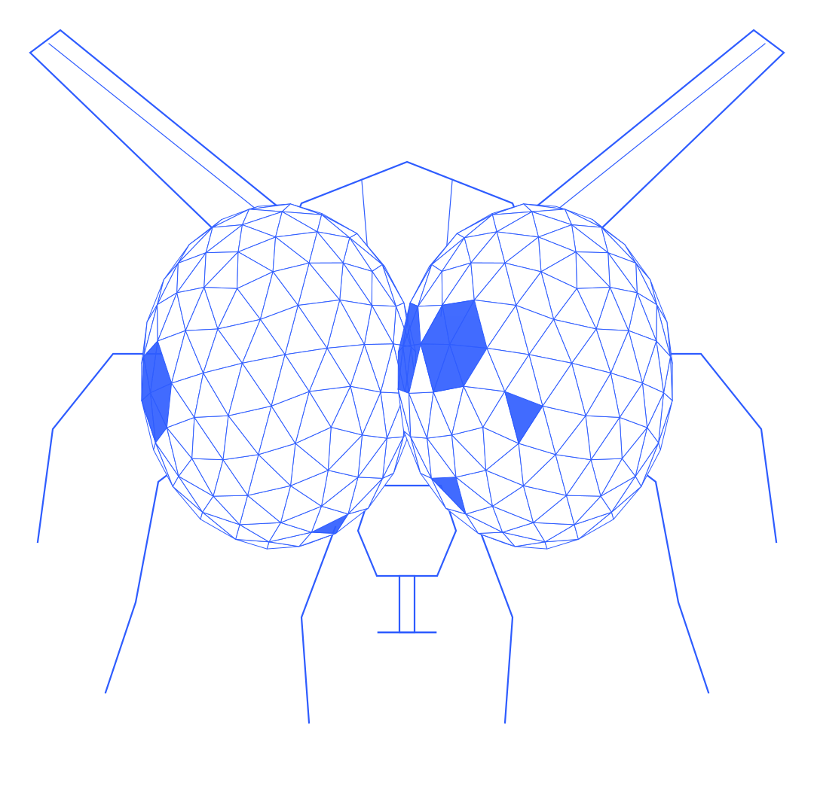

FlymarketCan a simulated fruit-fly brain circuit learn to predict market outcomes from reward alone?
The study in brief
This project uses a published computer model of the adult fruit-fly brain. The model has about 139,000 neurons, and its wiring comes from the FlyWire connectome, a complete map of the fly brain's connections. The original model does not learn. We added a simple learning rule to one part of it, the mushroom body, which is the brain region flies use to learn from reward and punishment.
We then ask a single question. If the circuit is shown prediction markets and rewarded when it picks the correct outcome, does it end up predicting better than the market price alone? We test this first on simulated markets, where the right answer is known, and then on historical Polymarket markets.
Every pass or fail rule was written down and published before the test it governs was run. All three tests are complete. The learning test passed. The simulated-market test did not pass; its verdict was published on October 27, 2026. The real-market test did not pass; its verdict was published on November 8, 2026. On the held-out real markets, training made the circuit's forecasts worse than the market price and worse than its own untrained version. Both 95 percent intervals lie entirely below zero, so for this circuit, set up this way, the data rule out an improvement of any size at the 95 percent level. The verdict's closing clause, “This is not evidence of no edge,” written before the result, means only that setups this study did not test (other inputs, more training, a different readout) remain untested.
Where the study stands
The sections of this site
The method
How a market is turned into input for the fly circuit, and how the circuit learns from the outcome.
Read → 2The results
The learning test passed; the simulated-market and real-market tests did not.
Read → 3The trading test
The circuit's simulated trades on the held-out real markets, day by day. The profit and loss is reported, not tested.
Read → 4The checks
Every test we set ourselves, including the mistakes we found, in the order they happened.
Read → 5The data
Which Polymarket markets are used, how they were chosen, and how they are split for training and testing.
Read → 6The code
The full public repository, including the preregistration documents.
Open on GitHub ↗